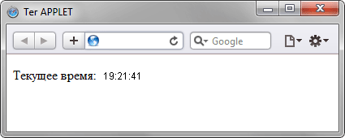

abbr
CGIабривиатура (при наведении, появляется расшифровка)
acronym
СПИДакроним — это устоявшееся сокращение, которое применяется как самостоятельное слово
adress
Yri Gantimurovпредназначен для хранения информации об авторе (курсив по к/д)
applet
предназначен для вставки на страницу апплетов — небольших программ, написанных на языке Java
article
задает содержание сайта вроде новости, статьи, записи блога, форума или др.
aside
сколько не пиши тут, aside будет справа
Определяет блок сбоку от контента для размещения рубрик, ссылок на архив, меток и другой информации.
audio
Добавляет, воспроизводит и управляет настройками аудиозаписи на веб-странице